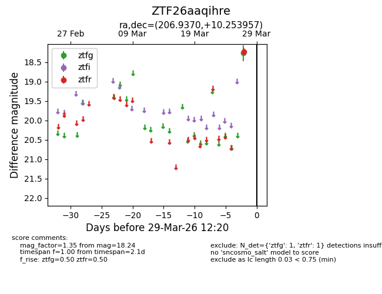
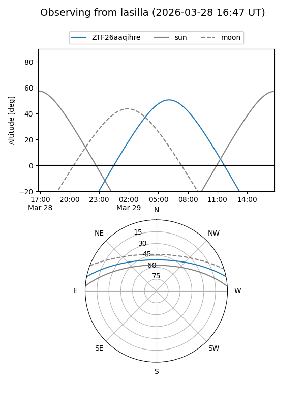
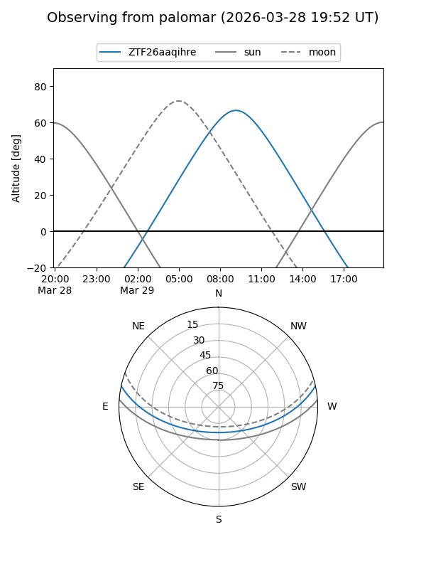

ZTF26aaqihre
Target ZTF26aaqihre at 2026-03-29 12:23
Aliases and brokers:
FINK: link
Lasair: link
ALeRCE: link
alt names
ZTF26aaqihre (ztf,fink_ztf)
Coordinates:
equatorial (ra, dec) = 206.9370,+10.25396
equatorial (HMS+DMS) = 13:47:44.89,+10:15:14.24
galactic (l, b) = (343.7823,+68.53513)
Flags:
Photometry:
last ztfg=18.27, ztfr=18.24
1 ztfg, 1 ztfr detections
Lightcurve

Visibility


Additional plots